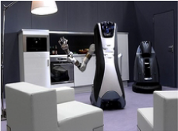

财经作家吴晓波在去年发表了一篇题为《去日本买只马桶盖》的文章，通过中国游客去日本“暴买”马桶盖和电饭煲的现象，点出了中国 制造业目前的困局，瞬间引发热议。此后，“马桶盖现象”成为了中国制造业的标签——中国的低端产能过剩，是工业大国，不是工业强国。
这种“马桶盖现象”是在德、美、日等工业强国都找不到的，也是中国制造业在学习工业4.0的过程中面临的最大问题。
工业4.0要量力而行
中国制造业不缺少学习工业4.0的热情。在德国汉诺威工业博览会上，前去观展的中国企业家一年比一年多，不少人抱着“我这次去德国引进一条工业4.0的流水线”的想法前去取经。但这个想法本身就是错误的。
西门子亚太区管理委员博乐仁表示，“如何造一个工业4.0工厂”这个问题本身就是不对的。因为工业4.0涵盖了一系列生产附加值的步骤，包括产品管理、工程、制造、供应链、物流链等，需要改变整个流程来降低成本，提升效率。
西门子的安贝格工厂是工业4.0工厂的教科书，只要谈到工业4.0，就绕不开安贝格工厂。可即便如此，西门子也没有革命性地对所有的业务进行“一股脑”地改造。博乐仁说：“工业4.0需要一套标准化的体系来实现，需要一个数据平台来支撑，如果只想让整个生产过程中的一小个环节实现工业4.0，那这个工程就太浩大了。”
中国可能会有一部分新兴产业率先实现工业4.0。比如那个最著名的“黑灯工厂”，在新松机器人自动化股份有限公司的工厂，机器人满车间来回穿梭，根据指令到仓库取货，将其搬运到工位上，然后由机械手装配零部件。此后的喷涂、烘干、检测、成品入库全部由机器人完成。这个工厂即便是在夜间关着灯也照样能从事生产。
至于其他一些仍在沿用传统生产模式的企业，例如中国很多中小企业目前还处于工业2.0阶段，连3.0都没有完成，谈何4.0？以博世洪堡物流中心为例，工业4.0时代的物流系统是用射频技术，加上一个射频芯片，不用人工扫码，就能掌握一箱货品走到什么地方。但是国内有的企业如今连条形码都没有，能够先通过条形码建立初步的系统，就是很大的进步了。
从最基础的方面来说，实现工业4.0首先需要建立一套标准化的体系和可以衔接的端口，而这正是中国制造业最薄弱的环节。再先进的技术也绕不开生产规范化、人员技能水平这两大基本课题。一流企业卖标准，二流企业卖技术，三流企业卖产品。如果中国没有把最基本的课题解决掉，那么中国制造业仍旧很难在工业4.0阶段实现赶超。
复旦大学产业发展研究中心主任寇宗来教授曾经表示，“经济学里有一种说法：最先进的不一定是最好的。也就是说，要采用适合企业实际情况的技术。所以企业一定要量力而行，既要看到未来发展的前景，也要注意到自身发展的阶段，不能太超前。”
>>>大数据分析
在制造业领域，基于海量数据的分析方兴未艾，它已经能帮助企业优化生产质量、节省能源并改进设备服务。在工业4.0的环境下，对不同数据源（生产设备和系统，以及企业和客户管理系统等）进行收集和分析，将成为未来企业进行实时决策的标准配备。
>>>自动机器人
很多行业的制造商已经广泛采用机器人完成复杂的生产任务。未来，这些机器人将变得更加强大，它们之间可以互通互联，也可以安全地与人类协同合作，甚至从人类身上学习新的技能。这些新机器人不但在性能上远远超过今天的工业机器人，更大大降低了成本。
>>>模拟技术
在工程设计领域，不少公司都采用了3D模拟技术来设计产品的结构和材料。未来，模拟技术将在工厂运营中扩展到更广的范围。人们可以用实时数据来模仿包括机器、产品和人在内的物理世界，将新产品放入虚拟的生产环境中。在进行实际生产前，公司可以对这些新产品进行测试和优化，从而减少设备装配调试的时间，并提高产品质量。